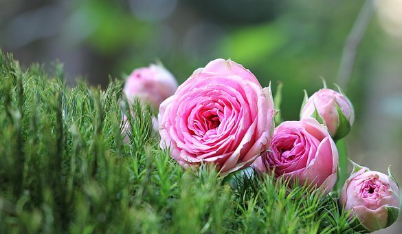
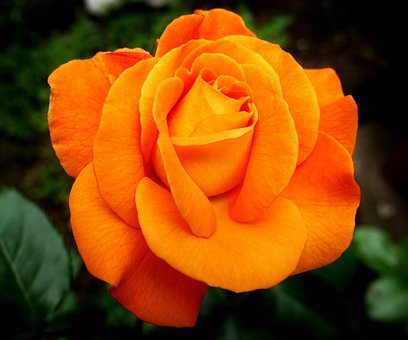

Kukkien historia
Lempikukkani

Kukat ovat kauniita ja niitä kannattaa nuuskia
Piikikkäitä linkkejä
Lisää kauniita kukkia
Punainen on toinen lempivärini

Jotkut ruusut ovat piikikkäitä
Nyky ruusut ovat niin jalostettuja, etteivät ne tuoksu
Kauniita oranssin sävyjä

Voit lukea lisää ruusuista sivupalkin linkistä